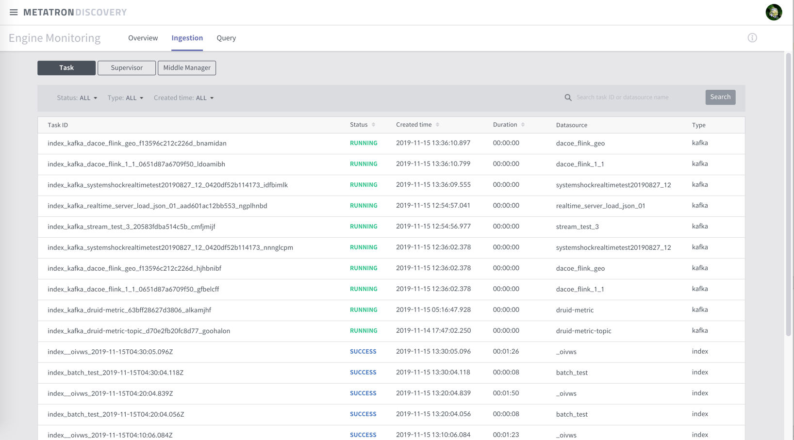
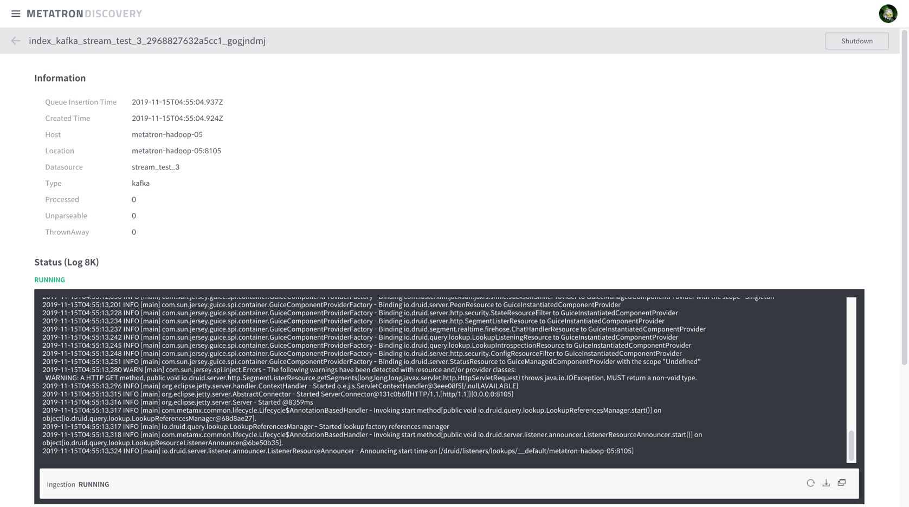

Ingestion¶
Ingestion is the monitoring of Druid Indexing Service. It provides performance status of the indexing tasks and related information.
Provided information identifies the following:
- MiddleManager Status
Capacity of each worker and current usage amount
- Supervisor Status
Status of each supervisor
provided feature: terminate (suspend, reset)
- Task Status
- runningTasks, pendingTasks, waitingTasks, completedTasks
provided feature: log, kill
Lockbox Status
Ingestion section displays details of both supervisor and middle manager.
Tasks¶
Tasks can be classified into 4 types of status:
pending: task waiting to be assigned to a worker
running: task currently running
waiting: task waiting on lock
completed: classified into two states - SUCCESS, FAIL
Task details and menu are as follows.
| Field | Description | Example |
|---|---|---|
| id | taskId | |
| type | ||
| dataSource | ||
| createdTime | ||
| queueInsertionTime | ||
| status | ||
| runnerStatusCode | ||
| duration | ||
| locationhost | ||
| locationport | ||
| payload | ||
| status | status |
|
| log | ||
| log last 8k | ||
| kill | ||
| ingestion |
It is displayed as shown below.

Following image is the detail view. (a case using Kafka)

And below is a case of general Task, not using Kafka.

Supervisors¶
You can monitor the running Supervisors. Details and menu available for monitoring is as follows:
| Field | Description | Example |
|---|---|---|
| Status | All of the supervisors provided by ‘get supervisorIDs’ are at running state |
|
| Datasource | ||
| Detailed Status | Details provided by status API |
|
| Lag | Lag details of kafka, acquired using emitter |
|
| Spec | ||
| Shutdown | Terminates supervisor. Kills related tasks as well. |
It is displayed as shown below.